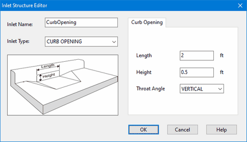

Next we create a set of inlet designs that can be deployed to the streets in our project:
| 1. | Select the Inlets category from the Project Browser. |
| 2. | Click the button to create a new inlet design. |
| 3. | Fill In the fields of the Inlet Structure Editor that appears with the design of a grated inlet as shown below: |

| 4. | After accepting the contents of the Inlet Structure Editor, repeat Steps 2 and 3 again to add a curb opening inlet as shown below: |
